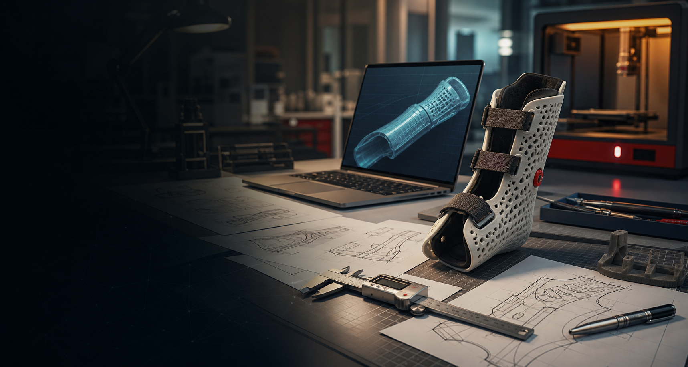
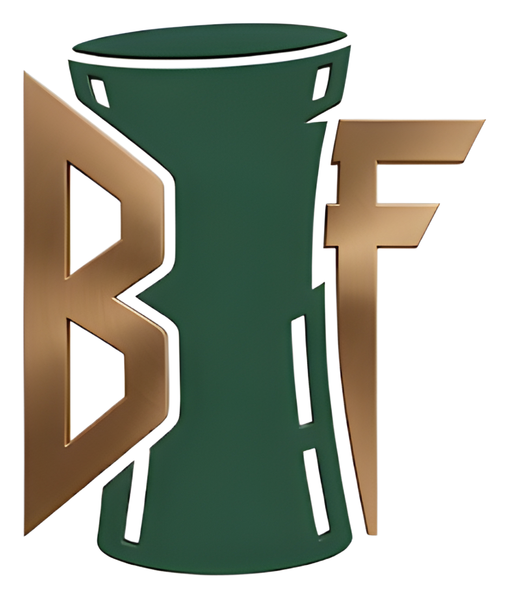

Engineering focus
Biomedical engineering student with a 4.0 GPA, interested in medical device R&D, hardware engineering, prosthetics, and ergonomic product design.

BME student, Rutgers Honors College, School of Engineering '29
I am focused on CAD-driven medical device design, 3D printing, ergonomic systems, and practical prototyping. My current main project is BraceForge: a web-based tool for designing custom wrist braces from patient-specific measurements.
About
Biomedical engineering student with a 4.0 GPA, interested in medical device R&D, hardware engineering, prosthetics, and ergonomic product design.
Main project

BraceForge
BraceForge is a browser-based configurator for designing a two-part wrist brace from forearm, wrist, palm, and thumb measurements. It provides an interactive 3D preview, supports left/right brace orientation, and exports generated geometry as STL or 3MF for slicer review and printing. The case study walks through the design goals, iterations, and engineering decisions behind the project.
Measure
Uses real hand and wrist dimensions, including wrist circumference, metacarpal width, thumb opening, shell length, and Velcro thickness.
Preview
A Three.js preview lets users orbit, zoom, and inspect brace features such as thumb clearance, strap slots, smooth edges, and optional ventilation.
Export
The generated brace can be exported as STL or 3MF and checked in slicer software before printing. The project includes a clear printing guide.
Experience
Supporting prosthetics-focused design work by helping coordinate materials, logistics, and iterative CAD prototypes for under-resourced communities.
Working on throttle, steering, and driver-interface systems, including 3D printed testing fixtures, SolidWorks FEA, and manufacturing-ready drawings.
Assisted with patient workflow, vitals, medical histories, diagnostic testing, scheduling, and EMR updates in a pediatric urgent care environment.
Contact
I am especially interested in Summer 2026 internship or co-op opportunities in medical device R&D, hardware engineering, CAD, and prototyping.